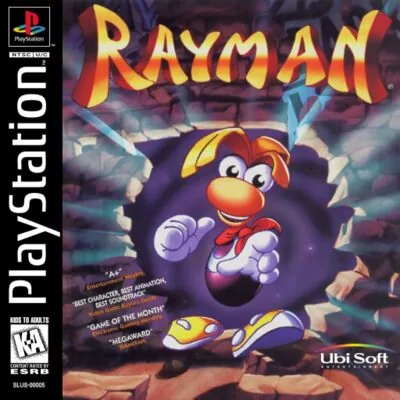

PlayStation
Rayman
- Año: 1995
- Desarrollador: Ubisoft
- Género: Plataformas
- Jugadores: 1 jugador
¡Rayman al rescate! Tiene que liberar a los Electoons, derrotar a Mr. Dark, salvar al Gran Protoon de su misterioso secuestrador y devolver la armonía al mundo.
Controles
que suene la música y si el botón 1P (Start) pausa el juego.
Mando de PlayStation (digital).
| Panel | Juego |
|---|---|
 | ✕ · Saltar |
 | ○ |
 | R1 · Andar agachado hacia la derecha |
 | □ · Dar un puñetazo (se consigue al principio del juego; mantener pulsado: puñetazo cargado) |
 | △ |
 | L1 · Andar agachado hacia la izquierda |
 | R2 |
 | L2 |
 | Start |
 | Select |
| + | Salir del juego |
El panel en PlayStation

Argumento
Recopilado de internet (2026-11-02).
En un valle tranquilo, la gente y la naturaleza viven en armonía gracias al Gran Protoon, un orbe mágico que cuida el hada Betilla. A su alrededor giran los Electoons, unos seres pequeños y alegres.
Un día, el malvado Mr. Dark roba el Gran Protoon y vence a Betilla. Sin el orbe, los Electoons se dispersan y muchos acaban encerrados en jaulas por los villanos que surgen por todas partes. Betilla pide ayuda a Rayman, un héroe sin brazos ni piernas, para que recupere el Gran Protoon y libere a los Electoons.
Betilla lo guía durante la aventura, mientras Mr. Dark los vigila desde lejos, hasta que acaba secuestrándola. Rayman recorre seis mundos: The Dream Forest, Band Land, Blue Mountains, Picture City, The Caves of Skops y, por último, el Candy Château, la fortaleza de Mr. Dark. Por el camino se enfrenta a jefes como Moskito, Mr. Sax, Mr. Stone, Space Mama y Mr. Skops.
Final: con todos los Electoons libres, Rayman llega al Candy Château. Mr. Dark le quita el puño telescópico y lo encierra entre muros de fuego que se van cerrando, pero los Electoons se lo devuelven en el último momento. Rayman vence a Mr. Dark y recupera el Gran Protoon. En el epílogo se va de vacaciones con sus amigos… y con sus antiguos enemigos.
Jugabilidad
Recopilado de internet (2026-11-02). Lo marcado con ⚠️ no está probado en la bartop.
- Versión de la bartop: EE. UU. (SLUS-00005), en inglés.
- Objetivo: el malvado Mr. Dark ha robado el Gran Protoon y encerrado a los Electoons. Rayman tiene que liberarlos.
- Estructura: 6 mundos, cada uno con un jefe al final (detalle en «Guía de niveles»).
- Jaulas: cada nivel esconde 6 jaulas de Electoons. Para abrir el sexto mundo (Candy Château, donde espera Mr. Dark) hay que liberar todos los Electoons de los cinco primeros, así que toca volver a niveles ya pasados.
- Poderes: Rayman los va ganando según avanza: el puño telescópico, colgarse de los bordes, el helicóptero con el pelo y correr.
- Vidas: empieza con 5. Cada 100 Tings (cristales azules) dan una vida. Si pierdes las 5, hay que cargar la partida.
- Guardar: en la tarjeta de memoria (2 bloques). Hay pocos puntos de guardado.
- Mago: escondido en algunos niveles; abre fases bonus con tiempo límite que dan Tings o vidas.
Botones según las guías (⚠️ por confirmar)
| Mando de PS1 | Panel | Acción |
|---|---|---|
| ○ | A | Correr · usar la semilla mágica |
| ✕ ×2 | B ×2 | Saltar y girar (helicóptero) |
Fuentes
Guía de niveles
Recopilado de internet (2026-11-02).
| Mundo | Niveles |
|---|---|
| The Dream Forest | Pink Plant WoodsAnguish LagoonThe Swamps of ForgetfulnessMoskito's Nest |
| Band Land | Bongo HillsAllegro PrestoGong HeightsMr. Sax's Hullabaloo |
| Blue Mountains | Twilight GulchThe Hard RocksMr. Stone's Peaks |
| Picture City | Eraser PlainsPencil PentathlonSpace Mama's Crater |
| The Caves of Skops | Crystal PalaceEat at Joe'sMr. Skops' Stalactites |
| Candy Château | Mr. Dark's DareJefe final: Mr. Dark |
- Volver a por jaulas: algunas jaulas solo se pueden abrir con poderes que se consiguen más tarde. Para abrir Candy Château hay que volver a Pink Plant Woods, Anguish Lagoon, Bongo Hills, Twilight Gulch y Moskito's Nest con los poderes nuevos (en «Vídeos» están esas vueltas).
- Los nombres de mundo son los del juego; ⚠️ el reparto de niveles por mundo no lo dan las fuentes consultadas, sale del orden del vídeo.
Fuentes
Objetos
Recopilado de internet (2026-11-02). Lo marcado con ⚠️ no está probado en la bartop.
| Objeto | Qué hace |
|---|---|
| Tings (cristales azules) | 100 dan una vida. |
| Jaulas de Electoons | 6 por nivel; hay que abrirlas todas para llegar al último mundo. |
| Semilla mágica | Se usa con A (○) ⚠️. |
| Mago | Abre una fase bonus con tiempo límite. |
Fuentes
Trucos y secretos
Recopilado de internet (2026-11-02). Lo marcado con ⚠️ no está probado en la bartop.
Secretos
- Último mundo (Candy Château): solo se abre liberando todos los Electoons de los cinco primeros mundos.
Truco: 99 vidas y vida completa (⚠️ sin probar)
Con el juego en pausa:
- Mantén, en este orden, L2, R1, L1, R2 y suéltalos en este orden: L1, L2, R2, R1. En el panel: mantener Flipper, R, L, ESC y soltar L, Flipper, ESC, R.
- Pulsa y suelta ○ (A).
- Mantén, en este orden, izquierda, ○, □, △ y suéltalos en este orden: izquierda, △, □, ○. En el panel: mantener izquierda, A, Y, X y soltar izquierda, X, Y, A.
- Existen códigos de GameShark (vida y vidas infinitas), pero no los copio aquí.
Fuentes
Longplay

Partida completa de la versión PlayStation (151 min), de LongplayArchive: Longplay of Rayman.
Pulsa el minuto de un nivel para ver el vídeo desde ese punto.
Niveles
| Mundo | Niveles |
|---|---|
| The Dream Forest | |
| Band Land | |
| Blue Mountains | |
| Picture City | |
| The Caves of Skops | |
| Candy Château | |
| Vuelta a por las jaulas |